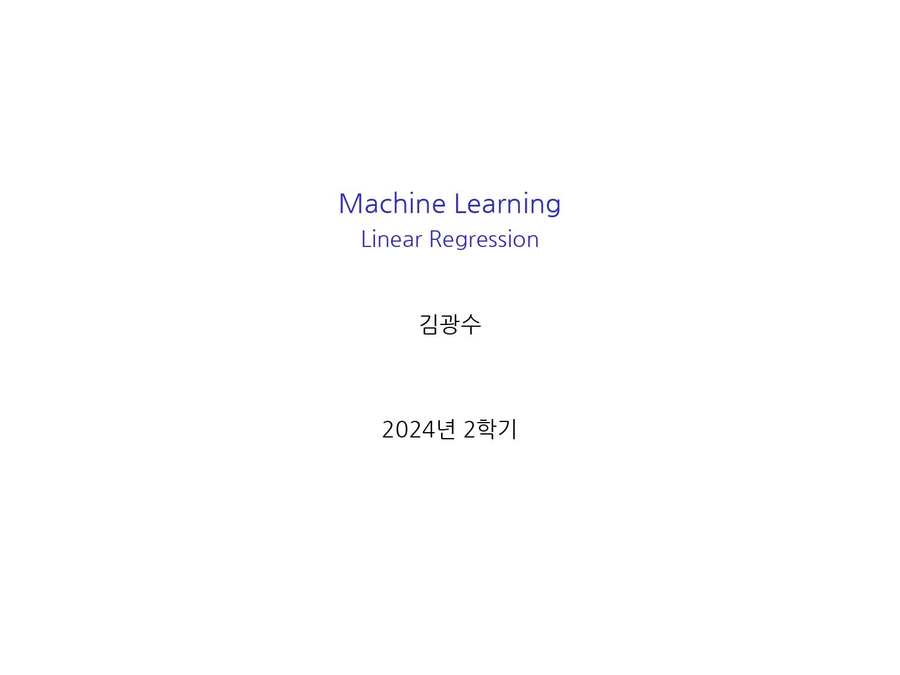
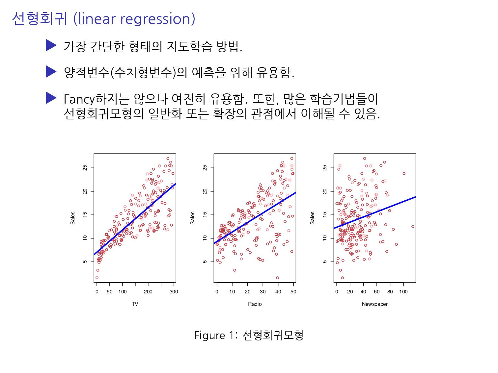
- 가운데 파란색 선은 회귀직선이다.
- 잔차를 그려 봐야한다고 배웠다.
- 오차의 분산은 되게 크면서도 점진적으로 증가하는 것이다.
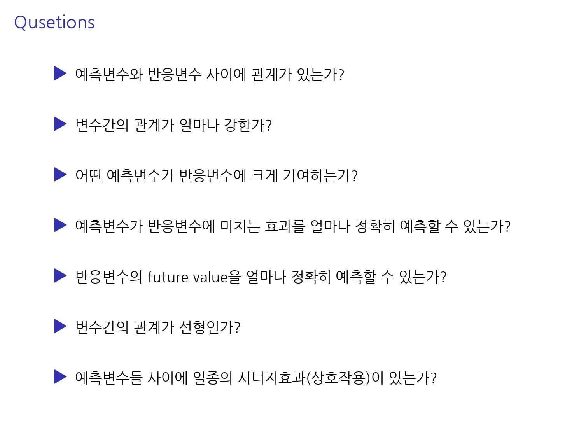
미국에 회사별로 임금의 격차가 있다. ㄴ 1)회사별로 임금의 차이가 존재한다. 또 2)직종별로의 차이가 있다. 이것이 시너지 효과라고 한다. 쉽게말해서 상호작용이라고 한다. 인퍼런스는 3번과 7번이 관심이크다. 예측은 5번에 관심이크다.
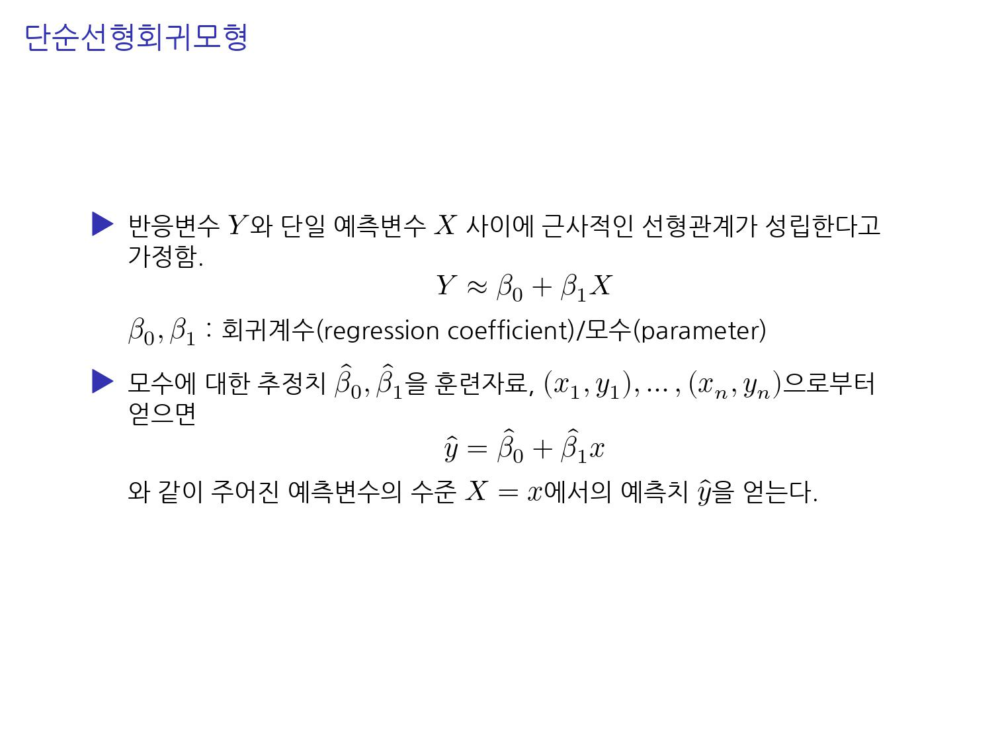
왜 물결이냐 e(오차항)이 없어서 yhat은 평균을 예측하는것이다.
우리가 알고싶은건 평균에 대해서 알고 싶은것이다.
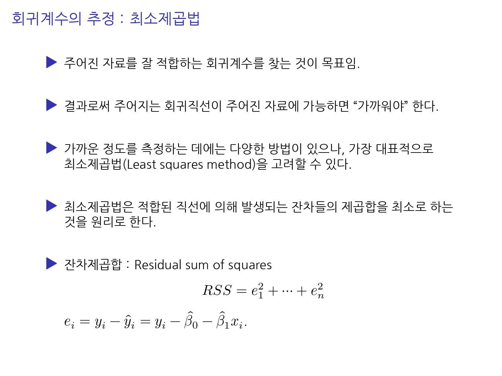
잔차의 제곱을 최소화 시킬때 기대값을 넣어서 최소값이 되는걸 하면 좋지만 기대값을 이론적으로 정의가 가능하지만 실제로는 샘플에서 mean을 적용해서 해야하는 상황이다. 제곱을 하는 이유는 다른것들에 비해 단순화 되기 때문이다. 잔차제곱합은 RSS라고 한다. #시험문제 잔차제곱합에서 최소값을 찾는 과정을 수식화 <-회귀분석에서 했던거 다시 보기 1) B1과 B0에 대해 각각 편미분 2)
*잔차의 성질 1)잔차를 다 다더하면 0이다. 2)잔차에 XY를 곱하고 다더하면 0이다. 3)yi-ybar = (각각의 잔차)를 벡터라고 생각하면 x와 내적하면 값은 0이다. 이는 x와 y는 직교하는중이라고 할 수있다.
*b의 특징 b1hat이 유의하냐가 중요하지 b0hat이 유의하냐는 보다 중요하지 않다.
??? = 샘플리니어리그레이션을 하는데 절편만 쓰는 리니어리그레이션을 한거다.
*잔차변동의 크기를 기대한다. vs 회귀변동의 크기를기대한다. 이게 어떤 상황이냐면 -상황1 클로로필 r^2이 0인경우 잔차제곱합은 양수, 회귀변동은 0이다. x축에따라서 평균이 바뀐게 하나도없다. 직선이 정확히 ybar이다. 이거는 무슨이야기냐면 x가 영향이 없다고 할 수있다. 즉 똑같은 평균내에서 단순히 변동만 있다는것이다. -상황2 모든위의 x가 직선위에 붙어있다. 잔차제곱합은 0이다. 회귀변동은 0이 될수가 없다. x축에 따라서 평균 수준이 변동이 없다. y의 전체변동을 이해할 수 있는 상황이다.
회귀제곱합이 클거고 잔차제곱합이 작으면 잘 추론하고 있는것이다.
-상황3 위아래변동이 심하면서 상승하는 느낌이 있다. 근데 그냥 봐서는 올라가는 경향이 있는지 모른다. 잔차제곱합이 상당히 크고 회귀제곱합도 0이 되지않는다. 그래서 이럴때는 상대적인비율을봐야하고 회귀변동의 비율이 작으면서 회귀직선위에서 변동이크다. 회귀직선이 0이냐 아니냐의 테스트가 있는데 변동이 커도 조금씩 느슨하게 증가하는 느낌이 있기때문에 0이라는 귀무가설을 기각할 수있다.
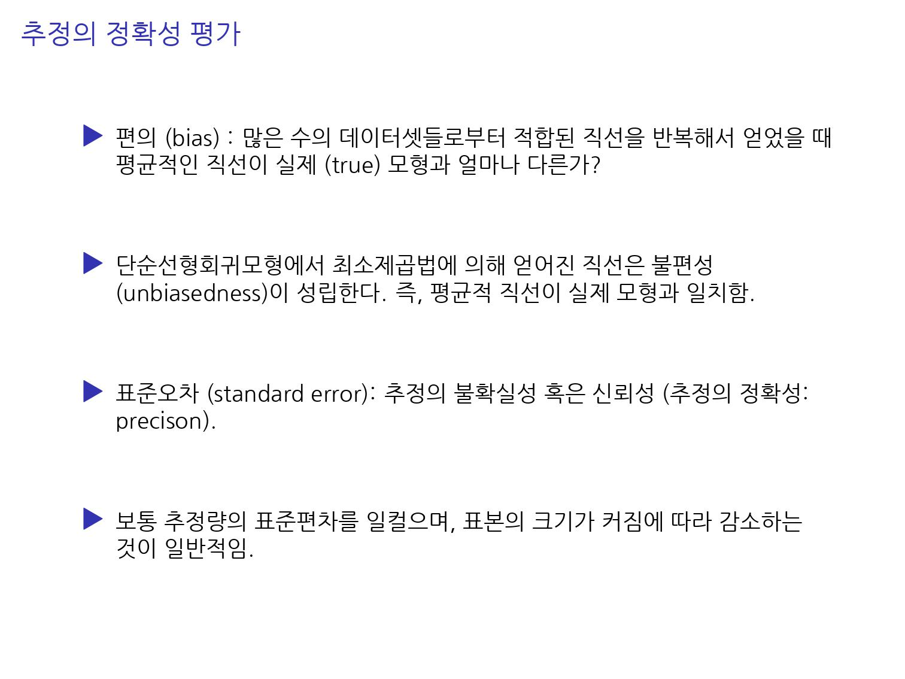
1)편의라는게 존재한다. b0hat과 b1hat은 결국 훈련데이터의 함수이다. 훈련데이터는 랜덤하게 얻어진다. 보통은 한번얻고 만다. 이론적으로 무한번 얻었다고 치면 ex)동전을 무한번 던지듯이 무한번으로 샘플을 얻어서 b0hat과 b1hat을 계속 구하면 값은 바뀌겠지만 그것들의 평균은 점점 실제값의 평균과 유사해진다. 이때 실제값과 예측값의평균의 차이를 편의라고 한다. 결론 우리가 샘플을 무한번얻어서 무한번 계산해서평균을 구한다면
샘플을 만개쓰면 만개의 편의 십만번쓰면 십만게의 편의가 생긴다. 점점 줄어들긴 하겠지만 아예없애기는 불가능하다. 단순 선형회귀에서는 편의가 존재하지 않는다. 즉 무한번 반복하면 단순선형회귀에서는 편의를 없앨 수 있다.
똑같은 값이 나오지 않는다는것은 분산과 표준편차로 측정할 수있따. 결국은 b0hat과 b1hat이 표준편차가 얼마나 되는지 계산해서 저희가 기대하는 표준오차가 작기를 기대해야한다. 즉 기대값이 수렴하더라도 변동이 크다는 것은 기대값과 많이 떨어져 있기에 바람직하지 않기때문에 변동을 줄여야한다.
표준오차를 줄이는 가장 쉬운방법은 표본의 크기를 매우키우는것이다.
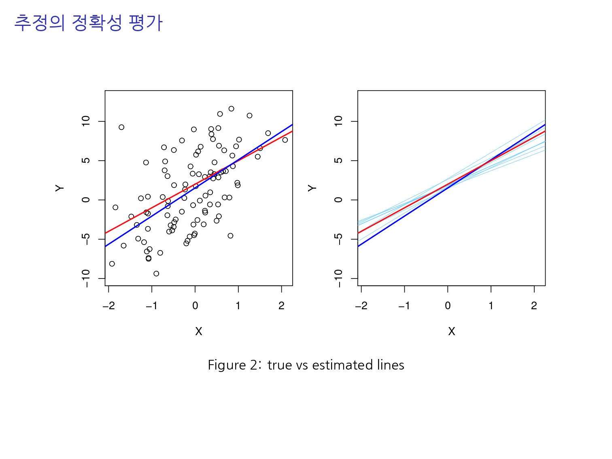
x y의 포인트가 계속 바뀌면서 회귀직선이 계속 바뀌는 상황을 표현한 것이고 많이 나온 회귀직선을 평균은 직선이다. 직선수준에서 평가하는게 아니고 하나하나의 점 수준에서 평가해야한다.
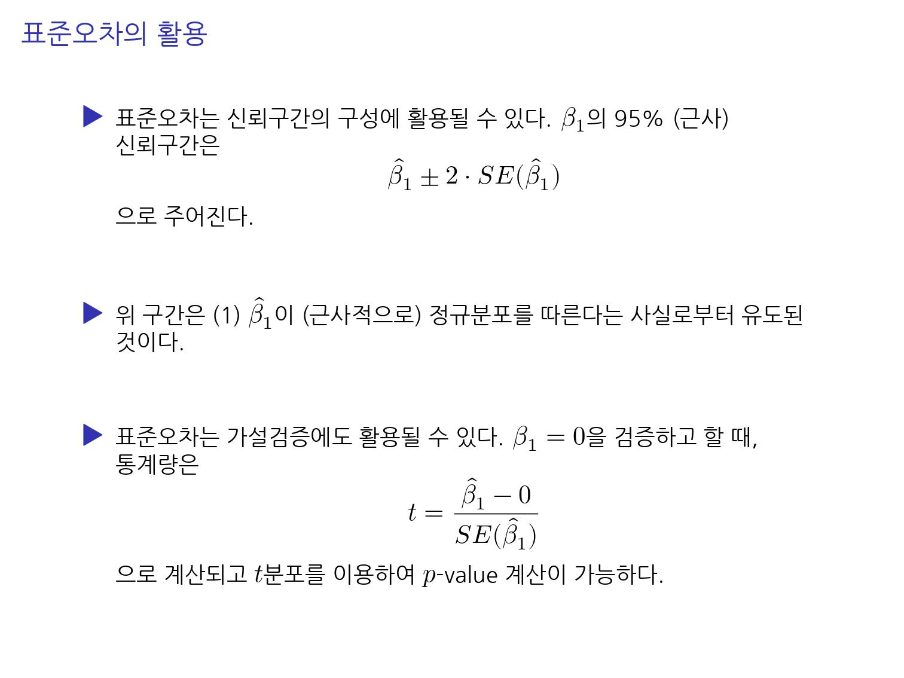
- 2를 곱했다는것은 95%신뢰구간을 만들때 2를 곱하면 95%신뢰구간이 된다는것이다. 사실은 1.96을 곱해야하지만 2를 곱해도 큰 차이가 없다.
- b1^은 x와 y를 같이 사용했고 둘다가능하지만 y가 확률변수이다. 그래서 y는 정규분포를 따라야한다. 이건 다른말로 입실론이 정규분포를 따른다고 할 수 있다. 평균이 0이고 분산이 시그마^2일 경우 근사적으로 정규분포를 따른다. 3)가설검증은 왜하냐면 우리가 가지고 있는 데이터가 우연히 나온것인지 아니면 진짜인지 알아보기 위해서다. 우리가 가지고 있는 데이터가 우연히 나온것이라면 우리가 가지고 있는 데이터는 특별한 의미가 없다. B1^이 추정량인데 이것이 0이라는것은 x와 y가 아무런 관계가 없다는것이다. 그래서 가설검증을 하는것이다. 사실 B1^은 0이 되는 이유는 단순하다. 확률밀도함수를 생각해보면 구간에대한 면적을 확률로 표현하는데 한 구간을 적분하게되면 0이된다. B1^이 0이될 확률은 0이고 검증을 했을때 평균이 0인데도 확률적으로 튀어나온거냐 아니면 평균이 0이 아님에도 뒤어나온거냐를 알아보는것이다.
- t분포는 정규분포를 따르는 확률변수의 분포를 따른다. t분포는 정규분포를 따르는 확률변수의 분포를 따르는데 정규분포의 분산을 모르는경우에 사용한다.
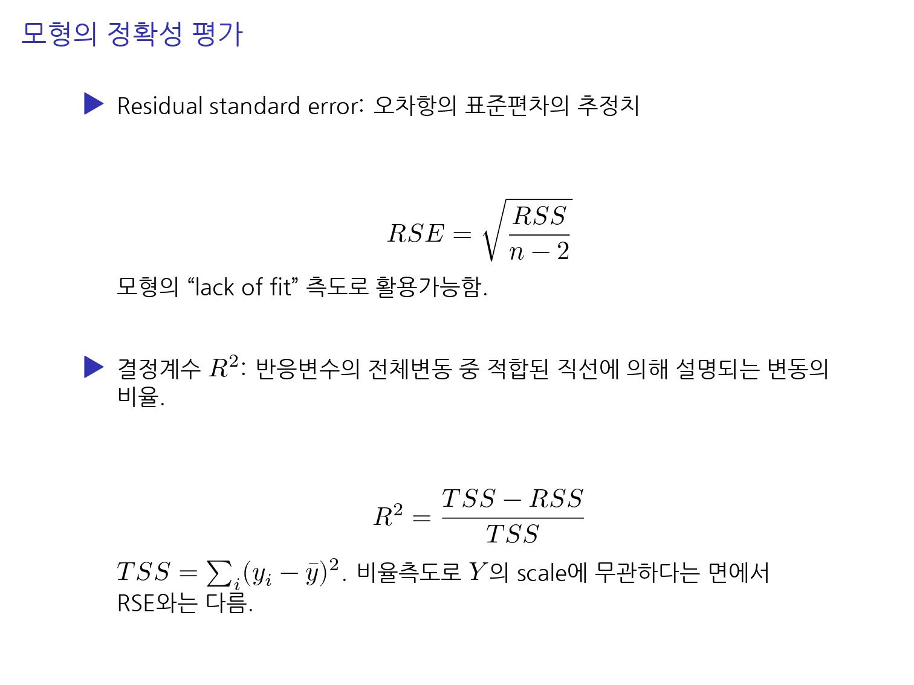
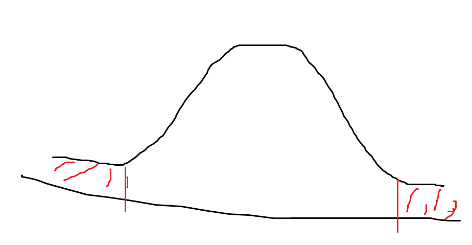
b1에 대해서 pvalue라고하고 저게 0.05보다 작으면 기각한다. 즉 기각한다. 기울기가 음수가 아니고 양수일것이다. pvalue가 0.05보다 크면 0이라는것을 기각하기 어렵다. 즉 사용하기 어렵다.
1)잔차의 제곱을 다더해서 n-2로 나눈뒤 뤁근을 취하면 표준오차가 된다. 이것은 추정량의 표준편차를 나타낸다. rss가 작다는것은 시그마가 작다는것 n-2로 나누는 이유는 평균같은 것을 얻고 나서 분산을 구하면 n-1로 나누는데 여기서는 추정량을 얻고 나서 분산을 구하는것이기 때문에 n-2로 나눈다. (여기서는 b0,b1 즉 2개를 구하고 나서 분산을 구하는것이기 때문에 n-2로 나눈다.) 2)r^2의 y의 scale과 무관하다는 것은 결정계수로 0~1사이의 값을 가진다. 1에 가까울수록 좋다. 0에 가까울수록 안좋다.
★모형의 유의성과 R^2는 일치하지 않다. 모형의 유의성은 모형이 의미가 있는지 없는지를 판단하는것이고 R^2는 모형이 얼마나 데이터를 설명하는지를 판단하는것이다. 주로 실수하는게 R^2이 작다고 모형의 유의성을 무시해버리는것이다. R^2이 작아도 모형의 유의성을 통과할 수 있다.
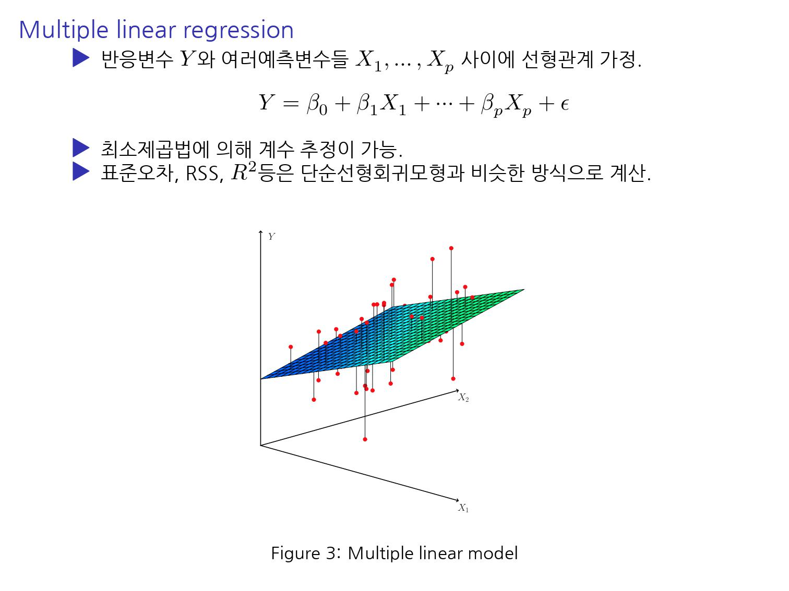
- f(x1 …xp) = b0 + b1x1 + b2x2 + … + bpxp + e 처럼 선형함수로 쓸 수 있다.
- 최소제곱법에 의해 계수 추정이 가능하다. 조금 복잡함 행렬연산 등이 필요하다.
- 표준오차라던지 Rss, R^2등을 통해 모형의 적합도를 평가할 수 있다.

1)가설검증을 해야한다. 직선이 다르변수의 영향을 받지 않고 누워있나 아니면 변수의 영향을받나에 대해 검증 근데 여러개의 변수에 영향을 받을 수 있고 아니면 하나의 변수에 영향을 받을 수 있다. 가설을 세울때 모든 변수가 영향이 있다라고 세우고 대립가설은 하나라도 영향이 없다. 이렇게 세운다. n-p-1로 나누는 이유는 변수가 b0 b1 b2 … bp까지 있기 때문에 n-p-1로 나눈다. 2) 그래프에서 면적의 넓이가. pvalue가 0.05보다 작으면 기각한다. f가 일정하게 커지면 귀무가설을 기각을 할텐데 RSS를 크게 만들면 f가 커진다. n을 기우면 f가 커진다. 즉 R^2가 작은데 샘플사이즈가 커지면 모형의 유의성을 통과할 수 있다. 3) partial검증도 가능하다. 변수가 여러개일때 몇개의 변수에 대해 가설검증을 할 수 있다.
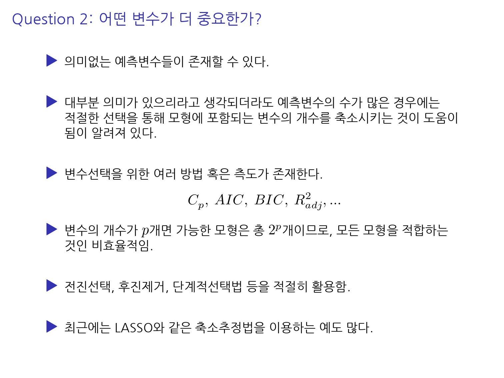
A에 대한 정보를 B와 C가 가지고 있을때 B와 C로 예측해본뒤 A와 검증해본다.
LASSO는 0인애들이 100개중에 20개 있다 B1^도 20개가 0이 나와야하는데 20개 보다 적게나온다. 아주 확신하는애들은 0으로 판단하지만 애매한 애들은 0을 못주는 성질이 있다. 하지만 예측이 잘된다. 실제 0인경우에 0으로 추정을 하고 그렇지 않은 애들도 상당히 작은 값으로 추정한다. 그러니깐 예측이 잘된다.
확인필요)))))전진선택은 0에서 시작해서 하나씩 추가하는것이고 후진선택은 전체에서 시작해서 하나씩 빼는것이다. 전진선택은 계산이 빠르다. 후진선택은 계산이 느리다. 단계적선택법은 전진선택과 후진선택을 섞은것이다.
훈련데이터에서 뭘 얻어냈지만 새로운 데이터에 대한 예측오차가 어떻게 될까?가 뭐냐면 Cp, AIC, BIC이다.
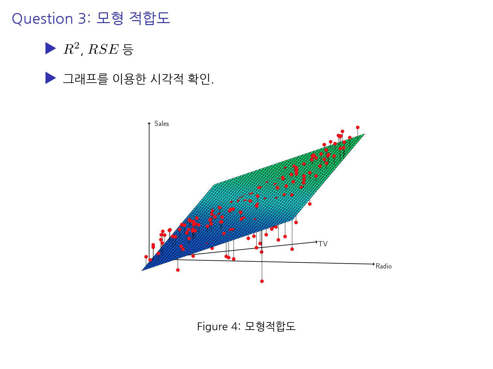
x축에 yhat과 x를 넣는 반면 y를 왜 안넣을까? yhat과 x는 직교하는 반면 y와는 직교하지 않는다.
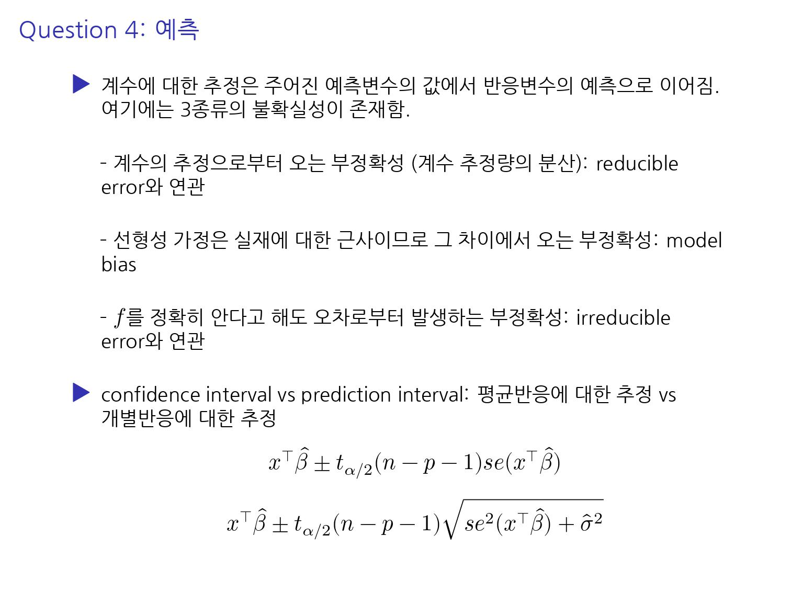
추정량에 따라서 직선이 계속 바뀐다. 오차의 영역들이 존재한다. (분산, 평균자체가 정확하지 못할때, 평균+입실론) 평균반응에 대한 추정 vs 개별반응에 대한 추정
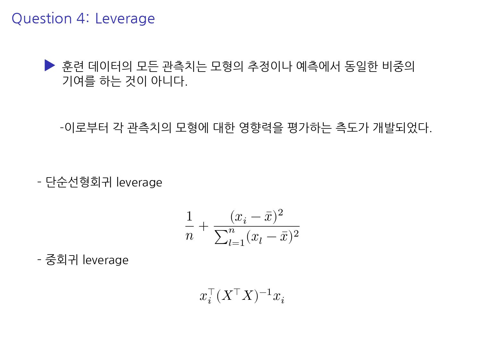
x가 xbar에서 멀어질 수록 leverage가 커진다. leverage가 커지면 표준오차가 커진다. 표준오차가 커지면 신뢰구간이 커진다. 신뢰구간이 커지면 가설검증이 어려워진다. ?
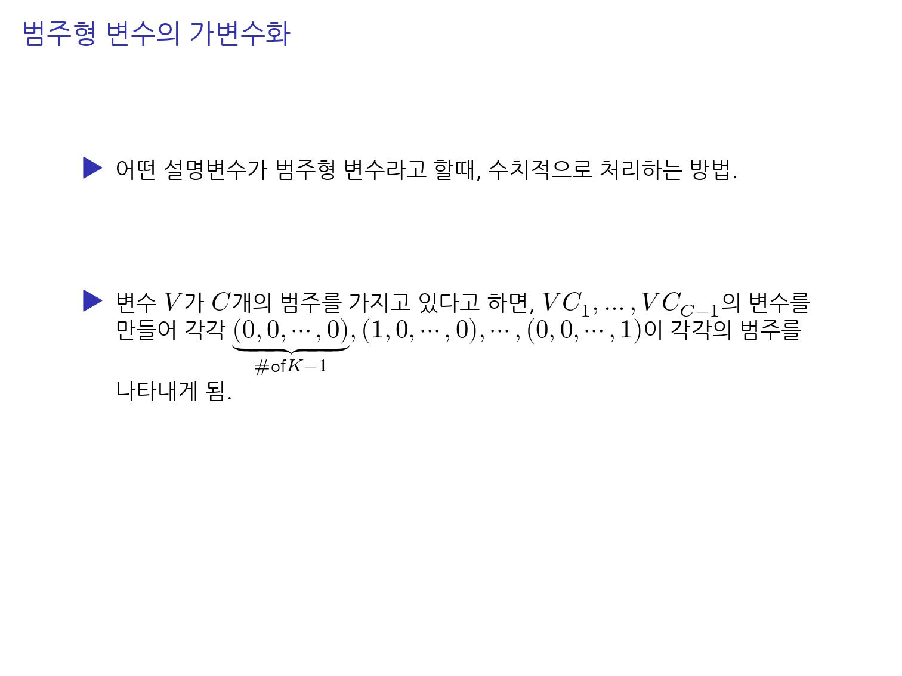
범주가 들어오면 범주의 갯수에서 1을 뺀만큼의 새로운걸
범주안에 있는 각각의 클래스를 모델링한다. 이때 범주중에 하나 빠진게 절편x가 되는거다 평균이 나머지 변수의 빼기 1만큼의 회귀변수를 의미한거는 얼마나 베이스라인하고 차이가 있나없나를 표현하는것이다. 자체평균은 아니다.
범주 통체로써 전체효과는 어떻게 되는거냐면 절편으로는 전체효과를 말못한다. 그이유는 베이스 라인의 하나만 포함 되어 있기 때문
’’’ z1 z2 z3 a -1 -1 -1 b 1 0 0 o 0 1 0 ab 0 0 1 b1 b2 b3
b0-b1-b2-b3
b0+b1
b0+b2b0+b3
’’’ 이걸 다 더한뒤 4로 나누면 b0만 4번 더한뒤 4로나눈 b0가 나온다. b0는 이렇게 해석 할 수 있다. b1,b2,b3이 모두 0일때 다더하면 b0가 안나온다. 이말은 b0가 전체의 평균이다라고 말할 수없다. 반면 a가 -1일때는 b0가 다 평균이라고 말 할 수 있다. 범주평균들을 다 더하면 0이되는 제약을 건다.
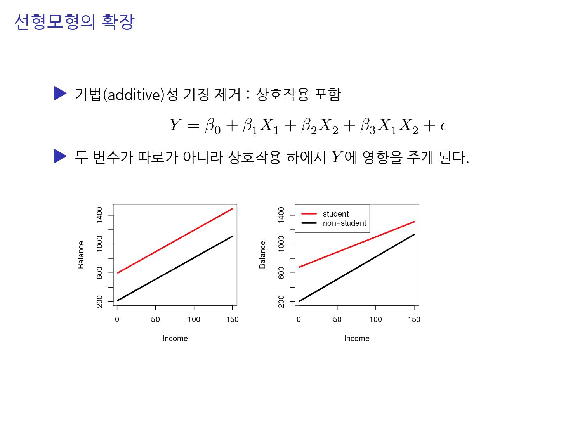
x1 -> x1+1로 바뀔때 (b1만큼 증가하고 b3x2만큼 증가한다.) 이말은 즉 x1이 바뀌면 b1의 평균수준의 영향을 준다. 교효작용을 받으면 다른 변수에 직접적으로 영향을 준다. 위식에서는 b3x2처럼 영향을 받는 것이다.
우리가 시험을 10점올리기위해 위해 3시간 공부했다고 하자. 이때 모든 장소가 다 다르다고 할떄 집에서 5점을 올렸고 강의실에서 15점 올렸다고 할때 평균은 10점을 올린건데 이때 서로 교호작용이 있다.
흑인임금에서 흑인 여성은 x1s2 흑인 남성은 x1s1 백인 여성은 x2s2 백인 남성은 x2s1 다음과 같이 인종에 따라 남녀일때 차이가 흑인일떄 ㅁㅁ만큼나고 백인일때 ㅁㅁ만큼 나네 이런식으로 보는 것이다.
평균을 모델링 할떄 교효작용이 없으면 다른 변수간에 영향이 없다. 이말은 x1의 변화에 따른 다른변수에 개입을 안한다는 소리다.
교호작용은 두개의 변수가 주고 받는 영향이 있나 없나를 말하는 것이다.
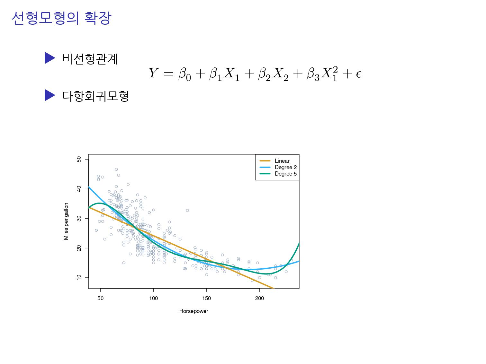
비선형은 제곱을 집어 넣으므로써 적용
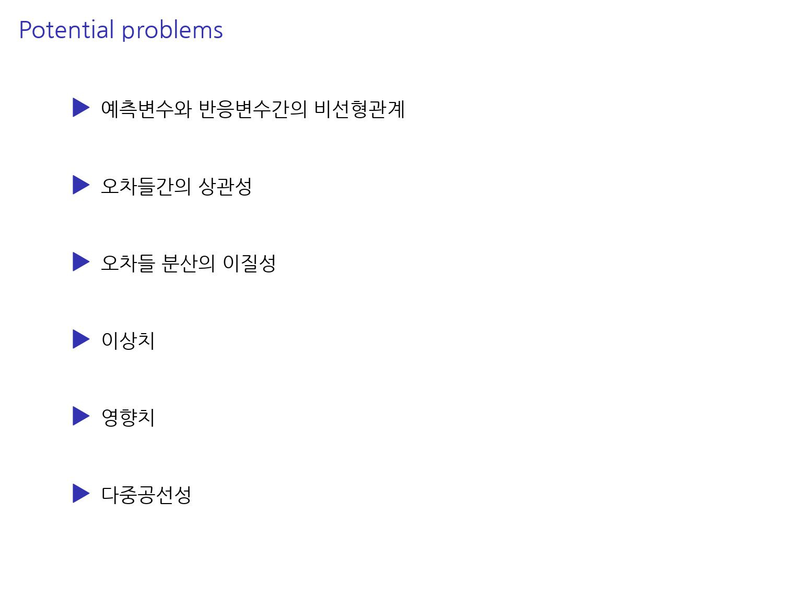
2번 시계열 3번 변동성이 큰 자료와 변동성이 작은 자료 끼리는 스케일을 바꾼다. 1)log 2)분산에 대한 회귀분석 4번 5번 확인해서 없앨꺼 없애고 6번
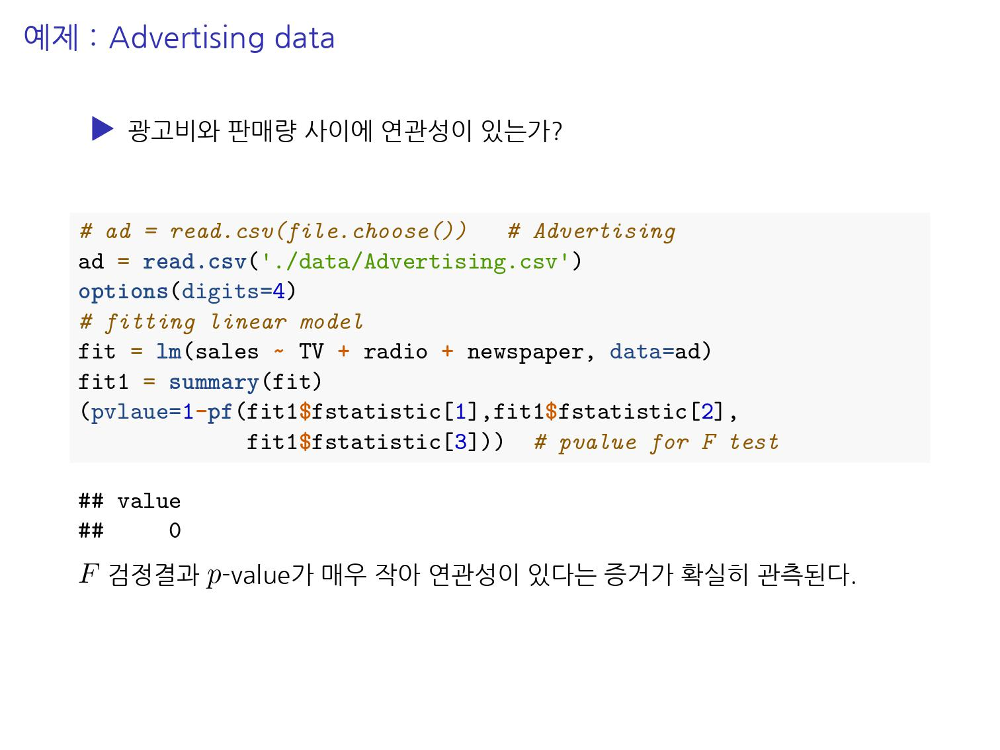
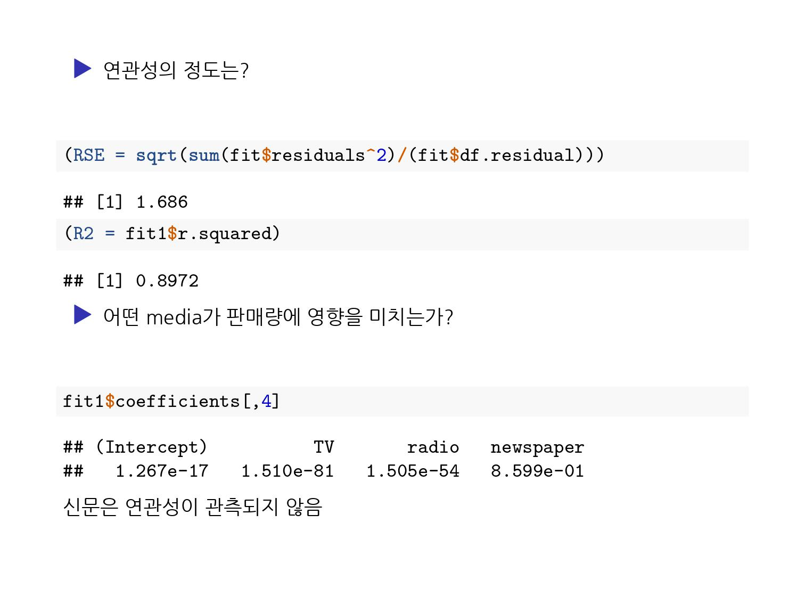
여기서는 pvalue를 나타낸다. 0.5보다 큰 newspaper는 기각
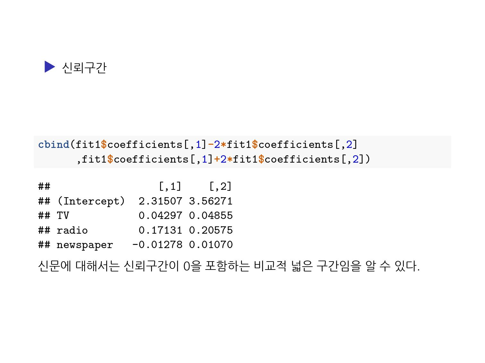
newspaper은 사이에 0이 포함되어있어서 유의하지 않을 것이다.
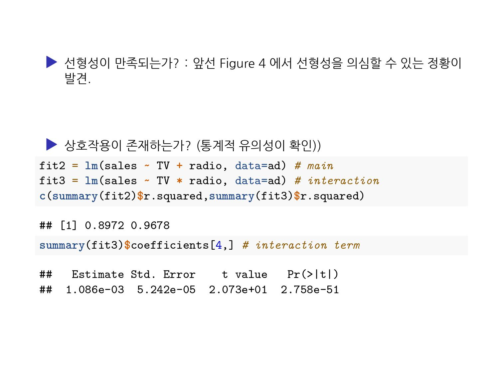
라디오와 같이했을떄 더 강해지냐 pr이 상당히 작은 값이 나왔다. 이것은 교호작용이 존재하고 유의하다라고 할 수있다.
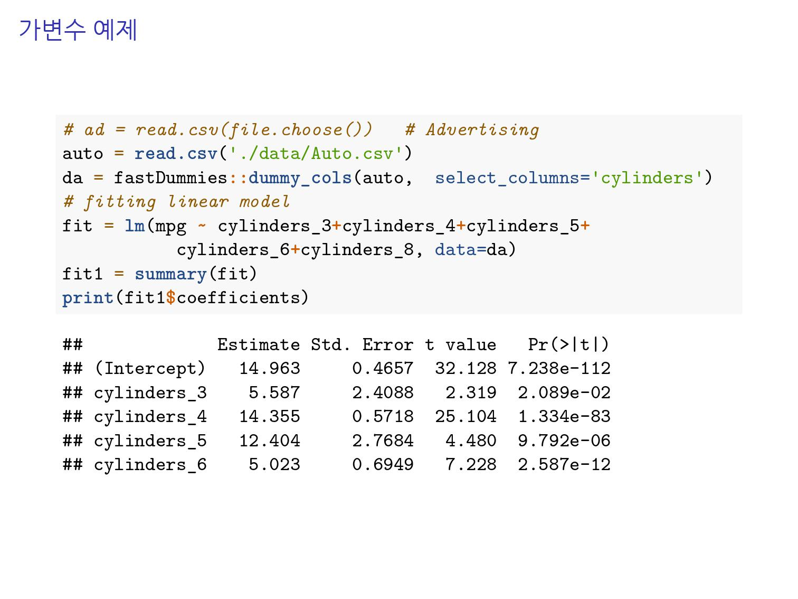
베이스라인이 있고 베이스라인에 대해서 어느정도 효과각 있는 ㅓㄱㄴ지를 보는것이다. 유의하다.
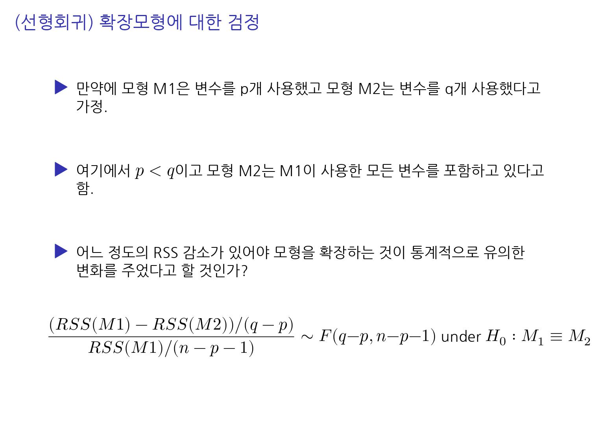
b0+b1x1+b2x2 R^2 RSS=m1 b0+b1x1+b2x2+b3+x3 R^2 RSS=m2
m1하고 m2를 비교 할때 m2가 더 클것이다. 더많은 변수가 동원이 됬으니깐 실제값이 b0 b1 b2 b3=0 그래서 처음에는 m1모델을 했다. 이때는 True이고 두번쨰는 m2모델을 썼다. RSS도 무조건 m1보다 줄어 든다. R^2도 커지고
주가 예측에서 R^2가 작은거 같으면 주가 뿐만아니라 날씨 내 성적 화장실 간 횟수 등을 넣으면 R^2은 커지고 RSS는 줄어든다. 차원이 커지면 무조건이다. 그럼 뭘 확인해야할까? 어디서 멈춰야하나를 결정해야한다. 쓸데없는거 집어 넣어도 R^2가 커지니깐 이때 해야할것은 모형에 따른 유의성검사이다. RSS M1를 계산하고 RSS M2를 계산 하고 RSS끼리 차이를 본다. 이걸
RSSM2-RSSM1 / q-p ——————- ~ F(n-p-1) RSSM1/ n-p-1
RSSM2-RSSM1의 차이가 커야 유의미한
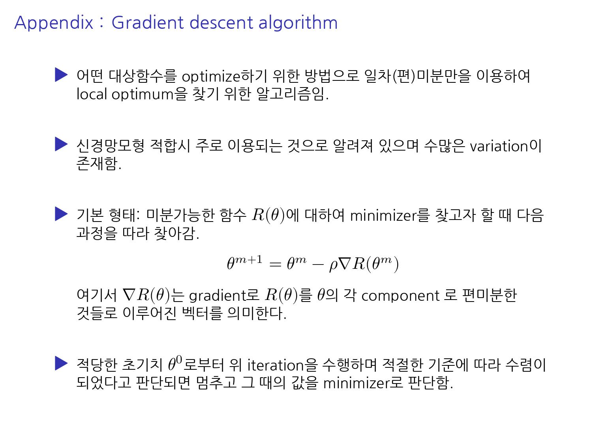
위글은 아래 그래프로 설명
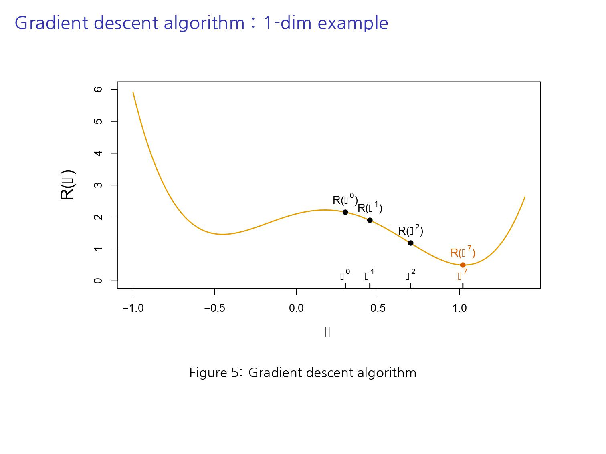
그레디언트(편미분한 베타)를 계산한 뒤 그레디언트의 부호에 반대방향으로 움직이기 값을 설정
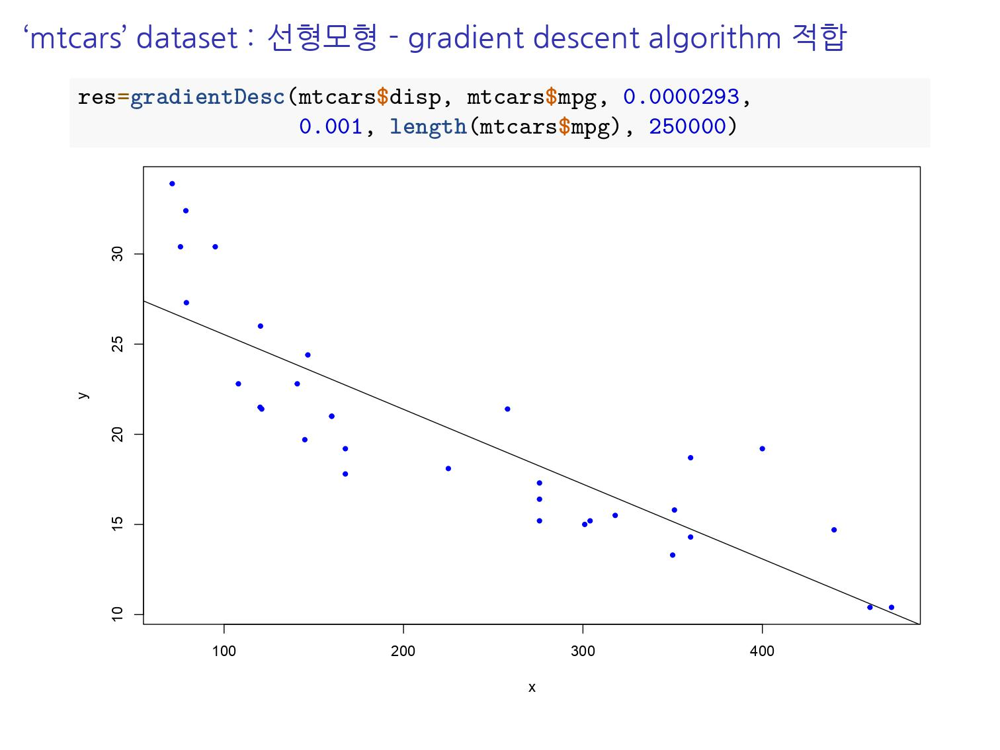
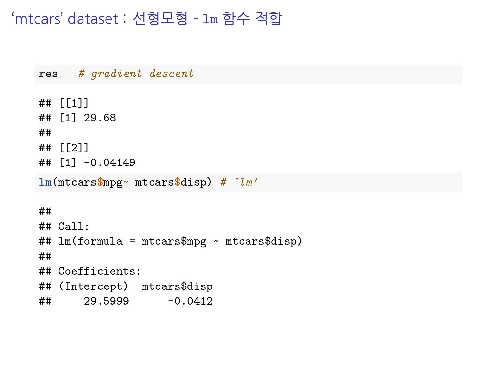